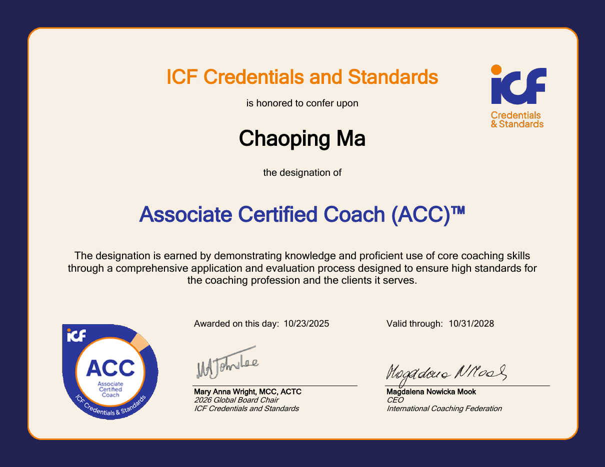

BASF SE · In-house Consulting
ex-McKinsey
ICF ACC
7+
300+
€500m+
3
03/2025 –
07/2024 – 02/2025
McKinsey & Company
Frankfurt
01/2023 – 06/2024
07/2022 – 12/2022
01/2019 – 06/2022
University of Mannheim
Peking University
BCG · Lazard · KPMG · Deloitte
♡
✦
▦
↑
◎
?

Associate Certified Coach (ACC)
- International Coaching Federation (ICF)
- 23.10.2025
- 31.10.2028